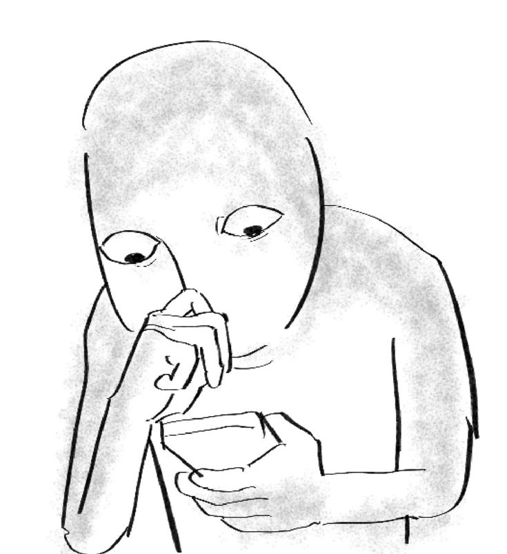
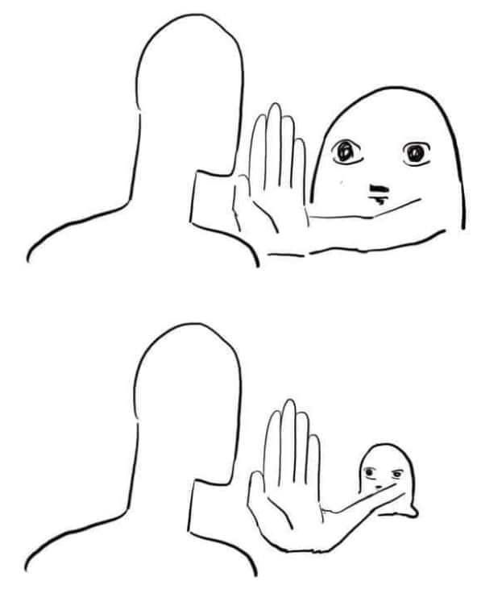

저는 갓 입학한 신입생으로 대동제라는 학교 축제에 처음 가보게 되는데요.. 그땐 학교 친구가 별로 없어서 혼자 가야하는 상황이었습니다.
근데 마침 다른 학교로 간 친구가 저희 학교 축제에 놀러 온다는 겁니다!!
그래서 그 친구와 함께 학교 축제를 갔는데 알고보니 저희 학교 다니는 친구가 더 있대요.
그리고 중요한 또 하나,
한명이 @라이즈 소희@ 닮았대요!!!!!!!!!!!!!!!
(제가 또 유우명한 소희 빠순이라,ㅎ)
(참고로 전 눈 째지고 매력상 좋아합니다^!^)
그렇게 그 친구들과 합석하게 되었는데요.
A(여)는 경영학과, B(남)는 msed? 그 학과라고 하더라고요.
(아니근데소희랑1도안닮았어요진짜.닮았어도0.01?하....)
무튼.....
그렇게 저희는 주점에서 술마시고 친해지는 시간을 가지고 축제도 즐겼습니다.
잘 즐기다가 갑자기 A가 할 말이 있대요..
그래서 뭔데라고 물었더니
"나 내일 휴학해"
?????????????????? 내일 휴학해서 이 학교에 없다는거 아닙니까. ...........
아니 방금 친해졌는데. 나 안 그래도 학교 친구 없는대....
뭐..
아쉬운 건 아쉬운거고~ 오늘을 즐겼답니다..~
그렇게 벌써 늦은 시간이 돼서 제 친구가 막차 때문에 집에 가야한다고 헤어지고, A도 통금 때문에 집가야 한다고 해서 저랑 B만 남았었는데..
별일 없었고요. 그냥 게임🎮 얘기 하다가 각자 집갔어요^^
그렇게 잊혀 지내다가 갑자기 디엠이 오는거예요.
B 한 테 서 .
롤체를 하자는거예요? 뭐 롤체는 제 전문 분야니까^!^
거짓말 1도 안 하고 전부다 1등 했답니다 캬컄!🏆
게임을 하면 전화도 했는데, 그렇게 게임 하면서 이런저런 얘기도 하고 점점 더 친해져서 게임메이트 가 되었습니다~
며칠이 지나고..
여느때처럼 또 게임을 하는데 갑자기 저보고 학식을 사래요.
?
아니 뭐 학식정도야.. 다음날 학식을 사고 그날 이후로 계속 밥 사라. 하는거 아닙니까?
아니 보통 밥 사준다 아닌가요...
무튼.,, 번갈아가면서 밥 사주고 카페가서 과제하고 집와서 게임하고 점점 더 친해졌는데...
뭔가..
아니 뭔가..
점점 그 느낌이 드는거에요.
아니 진짜 난 관심1도 없는데 얘가 밥먹자 거리고 놀자하고 걷다가자 데려다 줄게 등...

다들 오시죠???
그 느낌 오시죠??????!!!!!!!!!
네.... 그러다가.... 어느 날, 전화가 왔습니다...
"여보세요? 왜 전화함?"
Fxxx!!!!!!!!!!!!!!!
"...건 좀 아닌 듯"
"아,.. 아니야? 어어..! 장난이지~"
네... 전 이날 이후로 있는 정 없는 정 다 털려서 그냥 영화보기로 했던 것도 과제 땜에 바쁘다... 하고 철벽을 쳤습니다..

아니 그거 아시죠, 삐리한 느낌이 들었지만 설마 했다가 진짜였을 때..
아...... 싫은건 아니었지만(저멘트는싫었어요)
무튼,,,
갑자기 저 멘트 듣고
아, 이건 아니다
싶어서 어쩔 수 없이 연락을 잘 안봤답니다..^^
근데!
아직 친하게 잘 지내고 있어요ㅎㅎ
종종 게임도 하고 뭐 행사있으면 놀러오라고 하고~
진짜 말 그대로 그쪽으로 벽을 친거지,
친구 관계로는 문제 없답니다~~